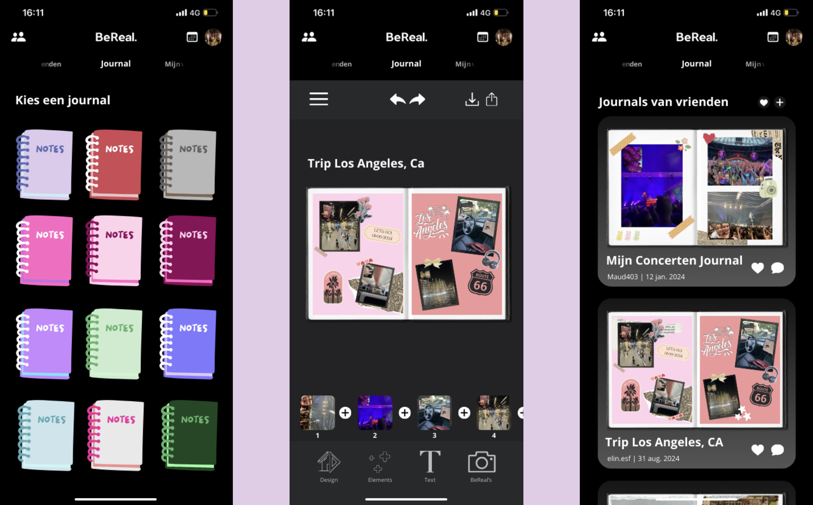
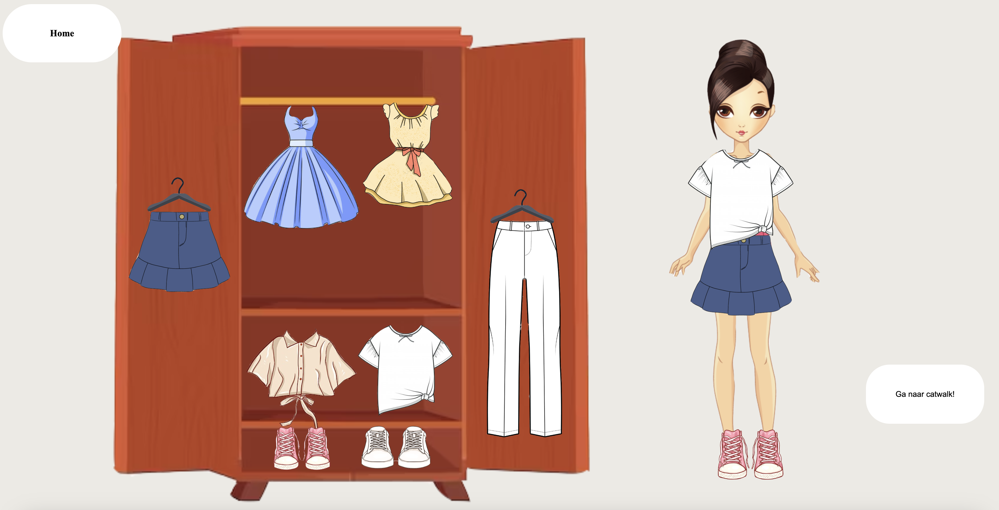
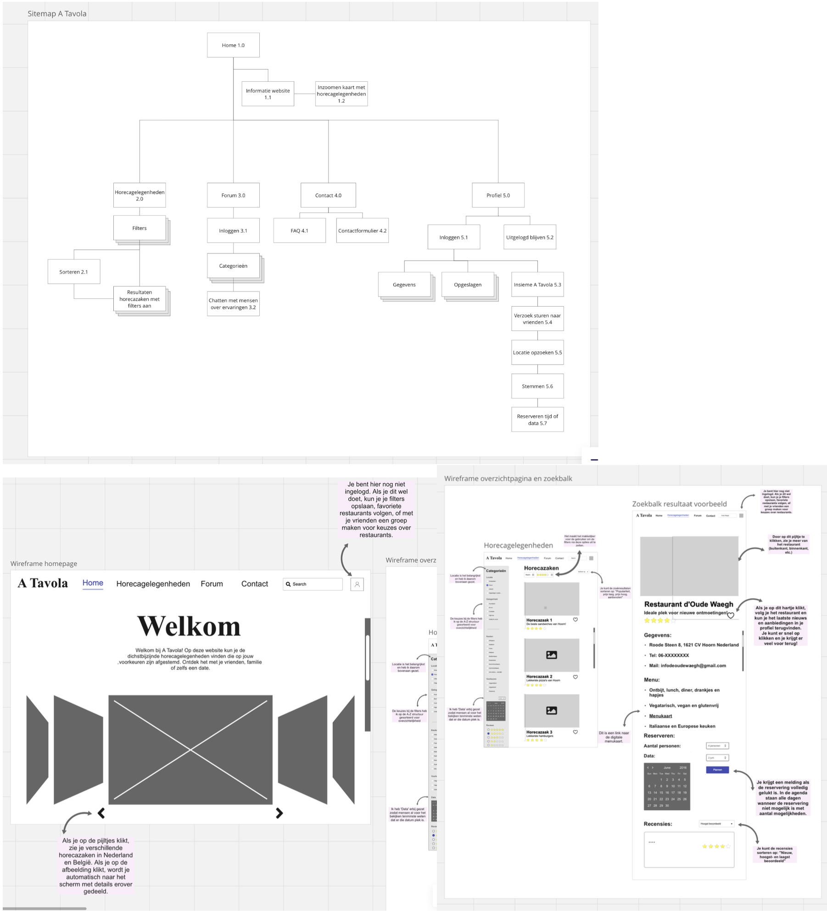
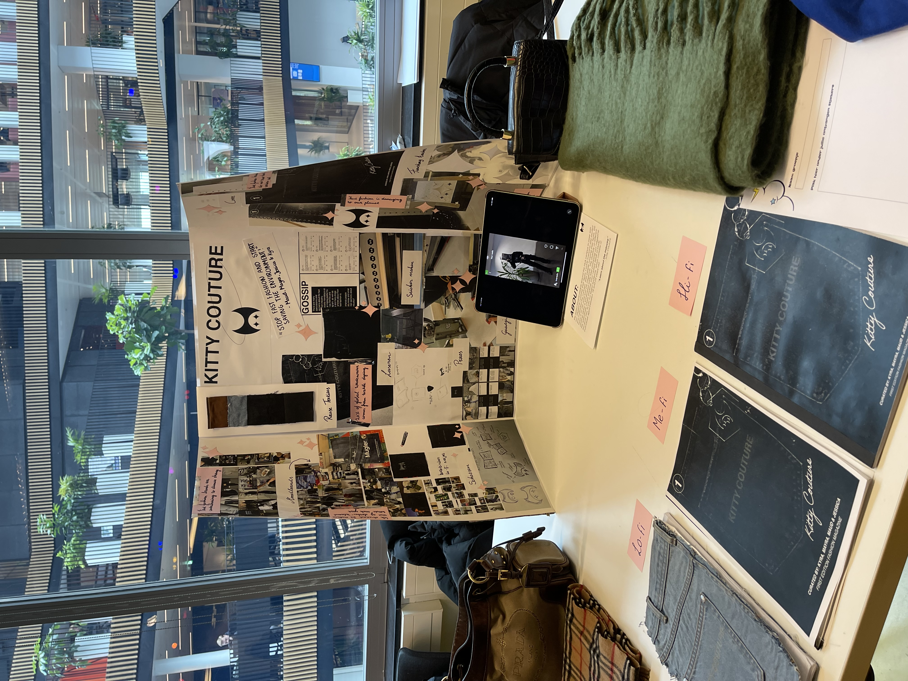
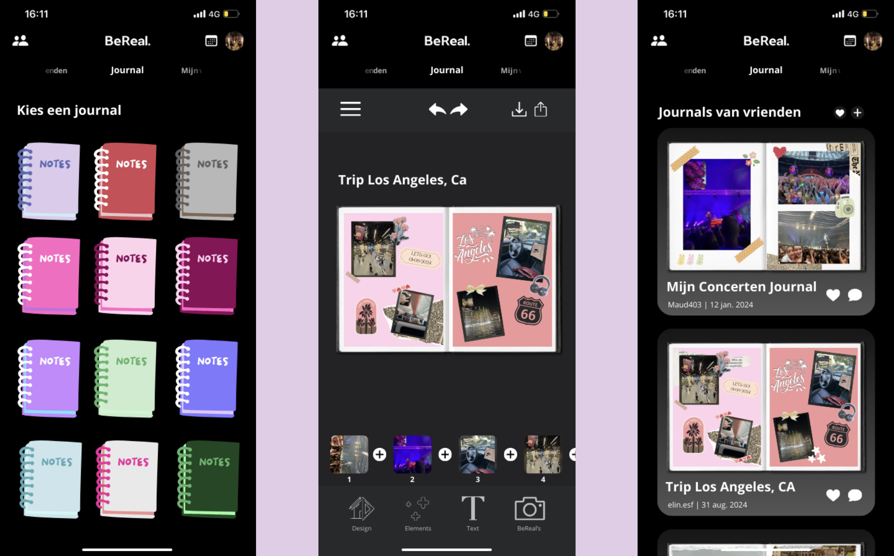
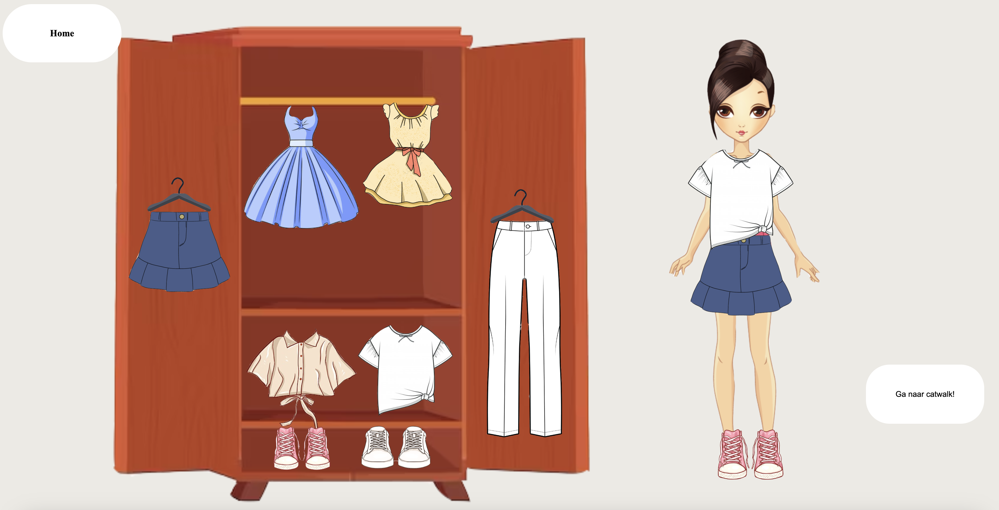
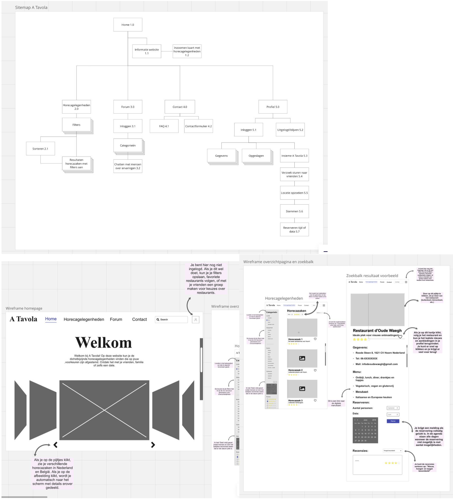
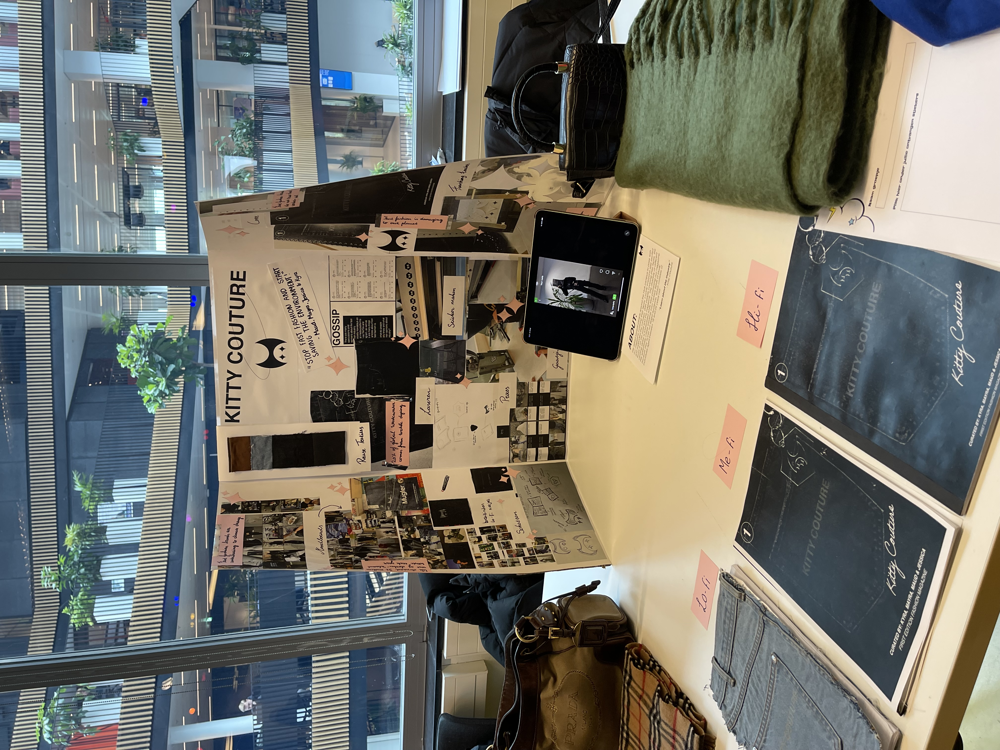

Persoonlijk leerdoel 3 is het maken van je portfolio. Dat is natuurlijk wat er nu te zien en te lezen is. Ik maak dit via visual studio code en haal mijn oude bestanden weer op om weer in het portfolio te zetten. Waarom ik het codeer is omdat coderen voor mij altijd een stukje uitdaging is en ik het weer wil verbeteren. Ook heb ik het vak emerging technologies nu en moeten we weer een beetje programmeren en heb ik de kennis dus weer wat beter opgehaald. Dit persoonlijke leerdoel kan ik dus ook omschrijven om weer verder te leren van visual studio code.
Maatschappij en interactie houd in dat je een app of website die je gedrag beïnvloed moet gaan onderzoeken en kijken hoe je iemand nog meer kan triggeren om met die app iets te gaan doen. Wij hadden voor de app BeReal gekozen en hadden als idee om je herinneringen samen te kunnen stellen in een journal en deze te delen met vrienden. Ook komen de nieuwe functies van de app bovenin te staan zodat mensen sneller die functie zullen gebruiken. Dit hebben we allemaal bijgehouden in een productbiografie en een bord op miro.
Het vak waar ik het meest mee heb gestruggeld dit blok was programmeren. Deze stof was weer totaal anders dan die van internetstandaarden en vond ik de tijd erg kort om een heel spel te maken die een interactie heeft die gemaakt is in javascript. Gelukkig kon ik genoeg om hulp vragen en is het me alsnog gelukt het te laten werken!
Informatiearchitectuur was een erg leuk en interessant vak. Ik ben veel nieuwe begrippen tegengekomen met de presentaties tussendoor en vond het erg nuttig om ook vanuit het perspectief van medestudenten te kunnen kijken wat zij zeggen bij een bepaald begrip. Het bedenken van een website voor het reserveren van een restaurant ging vrij goed en heb ik aangepast op de manieren hoe wij het uitgelegd hebben gekregen met de begrippen.
Aan het eind van dit blok sluiten we weer af met een team project. Dit project was van te voren al ingedeeld met wie je een passie deelt. Ik had een groepje die de passie mode deelde en we gingen een magazine maken die uitlegt dat we moeten overstappen op high-fashion en hoe slecht fast-fashion is op de wereld.
Ik vond het erg leuk om met mensen te werken die je nog niet kent en het enige wat je deelt een passie is. We maakten veel interessante dingen in het makers lab. Ook hebben we hard gewerkt aan de expo en hebben we spullen van thuis meegenomen om een verschil in fashion te laten zien.